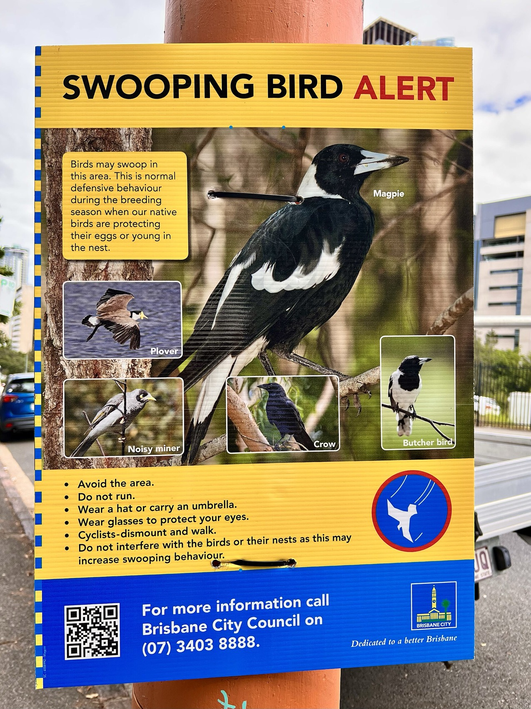
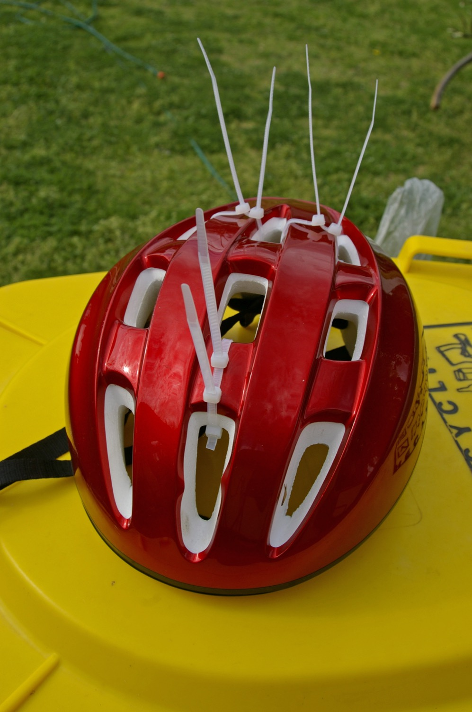

Warned before the swoop.
400 mMagpie · tap to mark a swoop

Magpie ahead250 m · Northbourne Ave · last 3 Nov
CLEARMagpies · tap to mark a swoop
Swoop Ahead is a free extension for the Hammerhead Karoo. It beeps about 250 m before a known magpie swooping spot.
Install on your KarooFree · no account · August to November
Tap when it swoops.
One tap on the Magpie field marks the spot. Your Karoo keeps it, and the shared map gets it the next time there's a link.
Where they swoop
Loading the spots riders have reported.
Got swooped off the bike, or on a walk? Add the spot. A report carries a place, a day and what you were doing, and nothing about you.
First, a magpie swoops a rider.
On your Karoo in three steps
It works on a Karoo 3 from your phone, so open this page there. On a computer the file is no use, unless you have a Karoo 2: that needs a cable and adb install swoopahead.apk.

- Share the install file to the Hammerhead app. On your phone, press and hold any Install button on this page, choose Share, then the Hammerhead app.
- Tap Install on the Karoo. Then open Swoop Ahead once. It tells you what it sends and lets you turn sharing off.
- Add the Magpie field to a ride page. Profiles, your profile, Data Pages, a page, Add Field, SWOOP AHEAD, Magpie. The warning works without the field. The field is how you mark a swoop.
Questions
Or keep the cable ties
Swoop Ahead is free, it takes two minutes, and the first swoop you mark warns every rider behind you.
Install on your Karoo Read the code